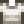

Wood
| Wood | |
| A sturdy, yet flexible plant material with a wide variety of uses. | |
| Information | |
| Source | Trees • Carpenter's Shop |
| Sell Price | |
Wood is a basic resource that can be obtained by felling Trees and branches with an axe or bought from Robin at the Carpenter's Shop. Robin sells Wood in her shop at the Desert Festival for  1 Calico Egg. It can also be found in Fishing Treasure Chests. Ninety-nine Wood can also be received as a gift from Robin at the Feast of the Winter Star. One to 10 Wood can be produced in a Woodskip Fish Pond, depending on the population of the pond. Wood can additionally be obtained from chipped Hardwood and from recycled or chipped Driftwood.
1 Calico Egg. It can also be found in Fishing Treasure Chests. Ninety-nine Wood can also be received as a gift from Robin at the Feast of the Winter Star. One to 10 Wood can be produced in a Woodskip Fish Pond, depending on the population of the pond. Wood can additionally be obtained from chipped Hardwood and from recycled or chipped Driftwood.
Felling a fully grown tree will yield between 12 and 16 Wood. After felling the tree, the stump can be destroyed to yield between 5 and 9 Wood. The amount of Wood dropped will depend on Luck and the player's Foraging level. Additionally, the Forester profession will increase yields from both trees and stumps, while reading Woody's Secret will only increase yields from trees. Felling trees near water can result in the loss of some or all of the Wood. To prevent this, players can destroy the tree while standing on the side where they do not want the tree to fall to, as it will always fall away from them.
Uses
Wood can be spent on a variety of different things, including:
- Building and upgrading buildings at the Carpenter's Shop
- Crafting various items.
- Creating 1 coal by placing 10 wood into the Charcoal Kiln
- 198 Wood are used (in two stacks of 99) in the
 Construction Bundle in the Crafts Room
Construction Bundle in the Crafts Room - 300 Wood are used for repairing the tide pool bridge at the Beach.
- 950 Wood are used for the Community Upgrade
Purchase Price
The price of wood at the Carpenter's Shop increases from  10g to
10g to  50g starting in Year 2. The player will receive a letter in the mail on Spring 1 of Year 2 saying "Notice: The price of raw materials at Robin's shop and Clint's shop has increased." The gold obtained by selling wood to Robin or through the Shipping Bin is unchanged.
50g starting in Year 2. The player will receive a letter in the mail on Spring 1 of Year 2 saying "Notice: The price of raw materials at Robin's shop and Clint's shop has increased." The gold obtained by selling wood to Robin or through the Shipping Bin is unchanged.
Crafting
This page or section contains unmarked spoilers from update 1.6 of Stardew Valley. Players may want to avoid or be cautious toward reading this article/section. |
| Image | Name | Description | Ingredients | Recipe Source |
|---|---|---|---|---|
| Gate | Allows you to pass through a fence. | Starter | ||
| Wood Fence | Keeps grass and animals contained! | Starter | ||
| Wood Sign | Use an item on this to change what's displayed. The item won't be consumed. | Starter | ||
| Mayonnaise Machine | Turns eggs into mayonnaise. | |||
| Bee House | Place outside and wait for delicious honey! (Except in Winter). | |||
| Preserves Jar | Turns vegetables into pickles and fruit into jam. | |||
| Cheese Press | Turns milk into cheese. | |||
| Loom | Turns raw wool into fine cloth. | |||
| Keg | Place a fruit or vegetable in here. Eventually it will turn into a beverage. | |||
| Tapper | Place on a maple, oak, or pine tree and wait for the reservoir to fill with product! | |||
| Cork Bobber | Slightly increases the size of your "fishing bar". | |||
| Wood Floor | Place on the ground to create paths or to decorate your floors. | |||
| Straw Floor | Place on the ground to create paths or to spruce up your floors. | |||
| Rustic Plank Floor | Place on the ground to create paths or to decorate your floors. | |||
| Weathered Floor | Place on the ground to create paths or to spruce up your floors. | |||
| Wood Path | Place on the ground to create paths or to spruce up your floors. | Starter | ||
| Flute Block | Plays a flute sound when you walk past. | |||
| Torch | Provides a modest amount of light. | Starter | ||
| Campfire | Provides a moderate amount of light. | Starter | ||
| Wooden Brazier | Provides a moderate amount of light. | |||
| Barrel Brazier | Provides a moderate amount of light. | |||
| Wood Lamp-post | Provides a good amount of light. | |||
| Crab Pot | Place it in the water, load it with bait, and check the next day to see if you've caught anything. Works in streams, lakes, and the ocean. | With Trapper profession: |
||
| Chest | A place to store your items. | Starter | ||
| Big Chest | It can store almost twice as much as a regular chest. | Carpenter's Shop ( | ||
| Scarecrow | Prevents crows from attacking your crops. Has a limited radius (about 8 "tiles"). | |||
| Deluxe Scarecrow | Prevents crows from attacking your crops. Has a large radius (about 16 "tiles"). | Mail, after collecting all 8 Rarecrows | ||
| Seed Maker | Place crops inside to produce a varying amount of seeds. Doesn't work with fruit tree crops. | |||
| Charcoal Kiln | Turns 10 pieces of wood into one piece of coal. | |||
| Recycling Machine | Turns fishing trash into resources. | |||
| Cask | Use in the cellar to age products like wine and cheese. | Farmhouse cellar upgrade | ||
| Tub o' Flowers | Flowers planted in an oak barrel. Blooms in spring and summer. | |||
| Tea Sapling | Takes 20 days to mature. Produces tea leaves during the final week of each season, except winter. No watering necessary! | Mail after | ||
| Cookout Kit | Use this to create a cooking campfire, allowing you to cook on-the-go! | |||
| Dehydrator | Place 5 pieces of fruit or edible mushrooms inside to dry them. | |||
| Text Sign | You can write a custom message on this sign. | Starter |
Buildings
| Image | Name | Description | Houses | Cost | Size |
|---|---|---|---|---|---|
.png/72px-House_(tier_2).png) |
House Upgrade 1 | Increase house size and adds a Kitchen. | |||
 |
Barn | Houses 4 barn-dwelling animals. | Cows | 7x4 | |
 |
Big Barn | Houses 8 barn-dwelling animals. Allows animals to give birth. Unlocks goats. | Goats | 7x4 | |
 |
Deluxe Barn | Houses 12 barn-dwelling animals. Comes with an auto-feed system. Unlocks sheep and pigs. | Sheep | 7x4 | |
 |
Coop | Houses 4 coop-dwelling animals. | Chickens | 6x3 | |
 |
Big Coop | Houses 8 coop-dwelling animals. Comes with an incubator. Unlocks ducks. | Ducks | 6x3 | |
 |
Deluxe Coop | Houses 12 coop-dwelling animals. Comes with an auto-feed system. Unlocks rabbits. | Rabbits | 6x3 | |
 |
Mill | Allows you to mill wheat, beets and rice. | 4x2 | ||
 |
Shed | An empty building. Fill it with whatever you like! The interior can be decorated. | 7x3 | ||
 |
Big Shed | Doubles the size of the shed. The interior can be decorated. | 7x3 | ||
 |
Shipping Bin | Items placed in it will be included in the nightly shipment. | 2x1 |
Gifting
| Villager Reactions
| |
|---|---|
| Dislike | |
Tailoring
Wood is used in the spool of the Sewing Machine with Cloth in the feed to create a dyeable Basic Pullover.
- Male version:

- Female version: 
It is a brown dye when used in the spool of the Sewing Machine with a dyeable clothing item in the feed. It can be placed in the orange dye pot at Emily's and Haley's house for use in dyeing.
Quests
- Robin may ask the player to gather 1000 pieces of wood within one week in the "Robin's Resource Rush" special order. The player may keep the harvested wood. If completed on time, Robin will mail the farmer the recipe to create a Stone Chest.
History
- 1.3.27: Increased price of wood at Carpenter's Shop from
 10g in Year 1 to 50g in Year 2+. Added Wood Sign recipe.
10g in Year 1 to 50g in Year 2+. Added Wood Sign recipe. - 1.4: The Forester Profession no longer increases the sale price of Wood. Added Deluxe Scarecrow and Tea Sapling recipes. Can now be used in Tailoring. Can be produced by Fish Ponds.
- 1.5: Used as an ingredient to the Cookout Kit recipe.
- 1.6: Used as an ingredient to the Dehydrator, Text Sign, and Big Chest recipes. Reading Woody's Secret has a chance to double wood output from trees. Can now be purchased at Desert Festival. No longer used for building Plank Cabin and Log Cabin.
| Resources | |
|---|---|
| Basic | Battery Pack • Bone Fragment • Cinder Shard • Clay • Coal • Fiber • Hardwood • Moss • Stone • Wood |
| Ore | Copper Ore • Iron Ore • Gold Ore • Iridium Ore • Radioactive Ore |
| Bars | Copper Bar • Iron Bar • Gold Bar • Iridium Bar • Radioactive Bar • Refined Quartz |